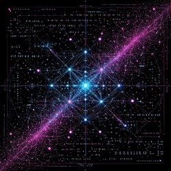
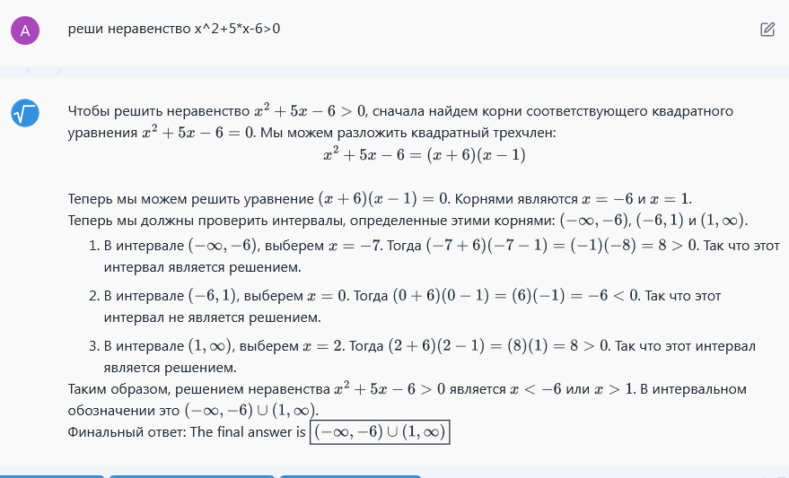
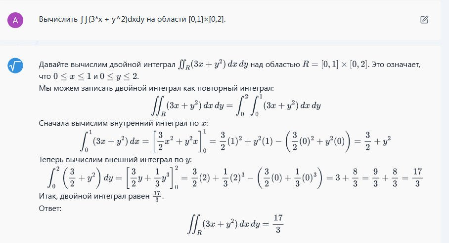

Нейросети для математики: от простых уравнений до кратных интегралов
Математика — один из самых сложных предметов для студентов. Будь то школьные неравенства или университетские задачи на интегралы, занятия часто отнимают много времени и сил. Нейросети в 2025 году становятся надёжными помощниками в учебе, предлагая не только решение, но и подробные объяснения.
В этой статье вы узнаете, какие инструменты подходят для разных типов задач, увидите примеры решений с помощью нейросетей и получите практические советы для эффективной работы.
Типы нейросетей для математики
Нейросети для математических задач делятся на две категории: универсальные модели и специализированные сервисы.
Универсальные ИИ:
- ChatGPT — хорошо объясняет теорию и решает базовые примеры.
- DeepSeek — открытый сервис для поиска и генерации ответов.
- Grok — простой интерфейс для вопросов и ответов.
- Gemini — поддержка сложных запросов (доступен через VPN).
Специализированные сервисы:
- Photomath — решает школьные уравнения и объясняет шаги.
- Mathway — покрывает алгебру и анализ.
- Math-GPT — пошаговые решения из формул или изображений.
Какие задачи решают нейросети?
- Алгебра: уравнения, неравенства, системы, матрицы.
- Анализ: производные, пределы, интегралы, дифференциальные уравнения.
- Статистика: вероятности, распределения, критические значения.
- Дискретная математика: логика, графы, комбинаторика.
- Геометрия: расчёт площадей и объёмов (ограниченные возможности).
Примеры решений
Квадратное неравенство: решить $$x^2+5x-6>0$$
{kind=link}
Производная: найти производную $$\tan\bigl(x^2+3x\sin^2x\bigr)$$
{kind=link}
{kind=link}
Двойной интеграл: вычислить $$\iint_{[0,1]\times[0,2]}(3x+y^2)\,dx\,dy$$
{kind=link}
Советы по работе с нейросетями
- Формулируйте конкретный запрос: «Пошагово реши ∫x²dx».
- Указывайте контекст знания и уровень подготовки.
- Проверяйте результат вручную или с помощью другого сервиса.